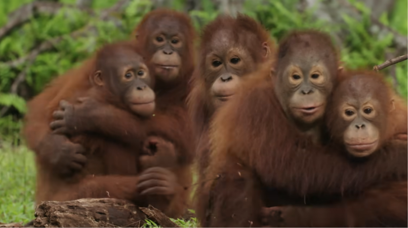
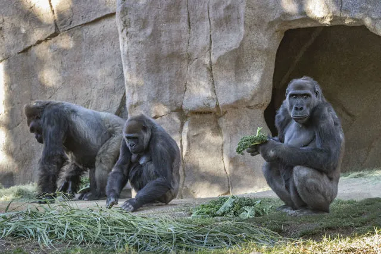
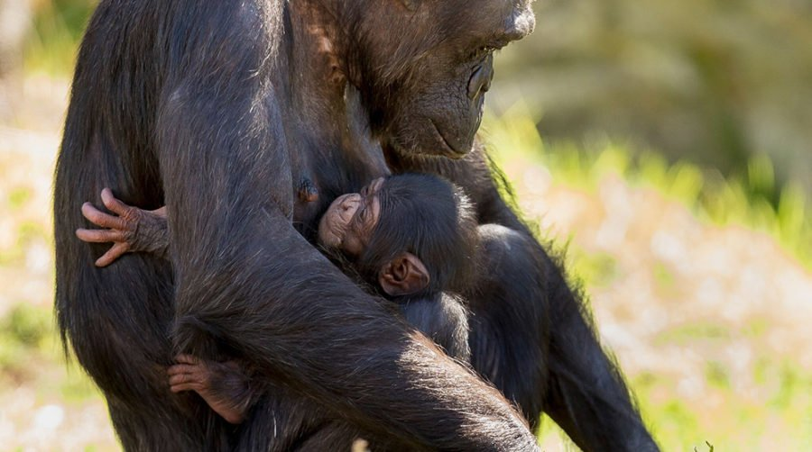
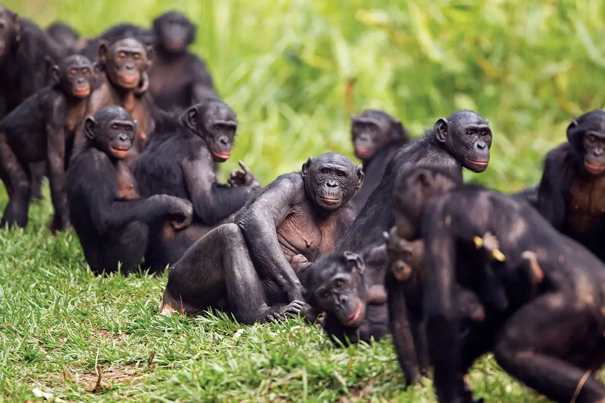
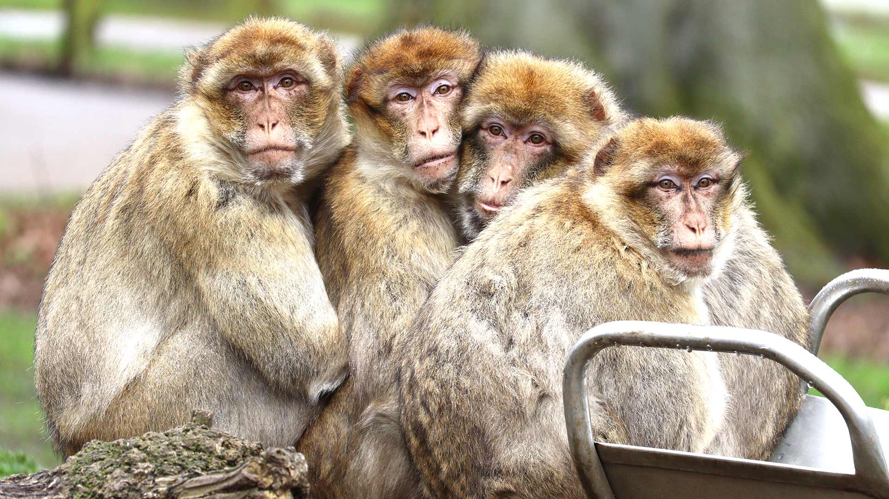
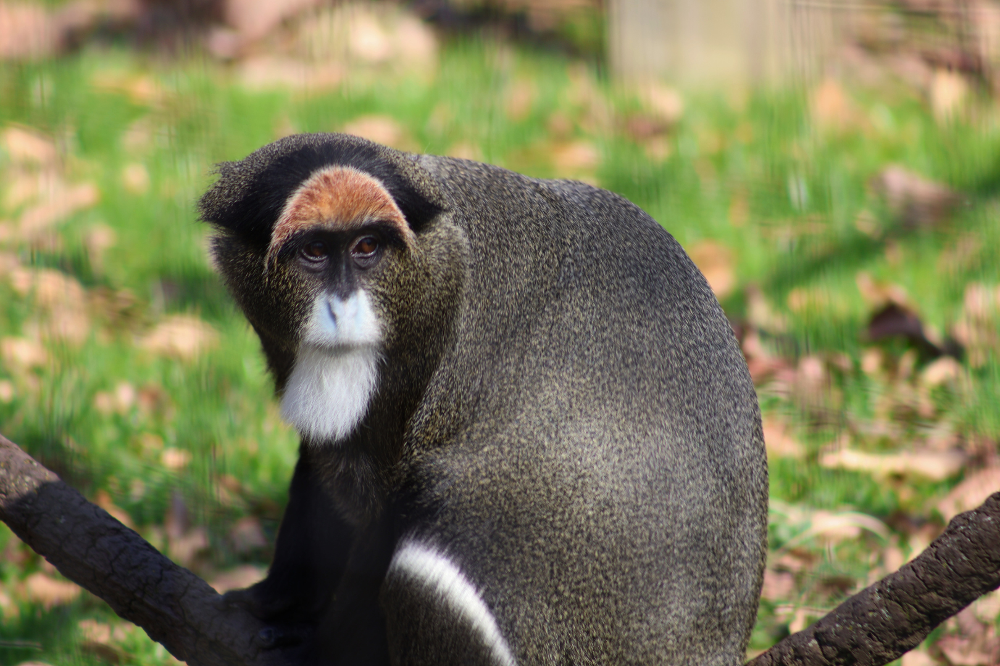
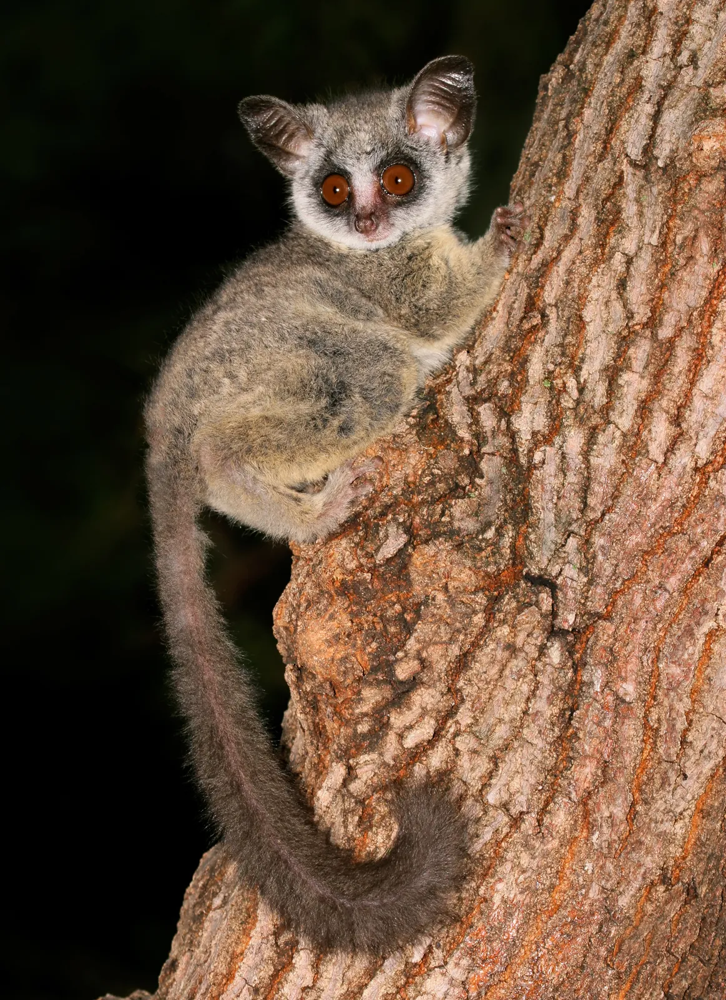
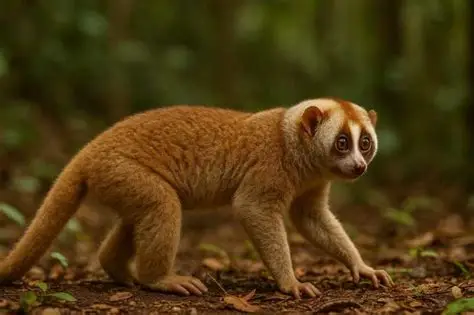
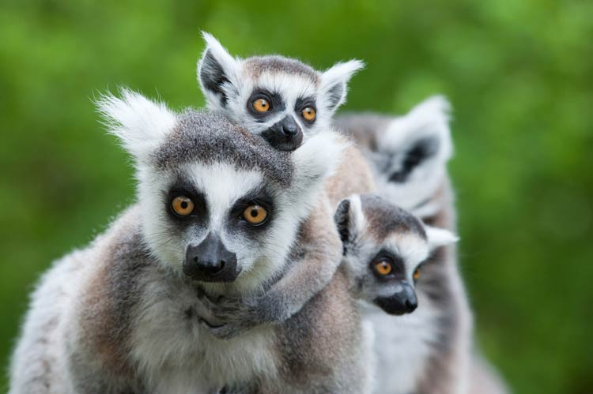

This is our famous primate exibit
Apes are very similar to humans in several ways, because humans are also apes!
There are 2 diffrent kinds of apes lesser apes and great apes.
Lesser apes are made up of exclusivly gibbons.
For great apes there are 5 diffrent types. bonobos, chimps, gorillas, orangutans, and humans




There are many more species of monkys when compared with apes.
There are a lot of diffrences between apes and monkeys.
monkeys are usually smaller, have tails, and aren't quite as smart




prosimians are quite strange. They arent as well defined as other primates
They are known for being primates with traits that primates dont usually have.
They are also usually quite small, are nocturnal, and have a varied diet
the most well known prosimians are leamurs.
